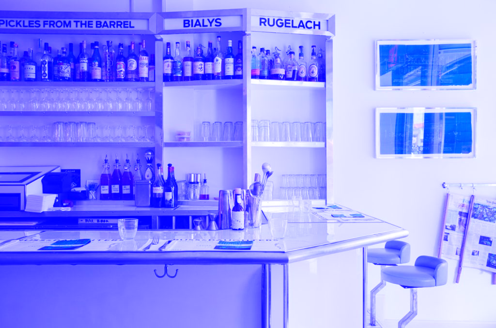

A Toast to Tradition: An interview with Russ and Daughters
By Gail O'Hara
Family. Quality. Service. History. Soul. New York. Community. Few businesses embody these qualities as perfectly as the 101-year-old Russ and Daughters. We speak to the fourth generation running the institution.
When Joel Russ emigrated from Austria-Hungary to the United States in 1907, he kicked off his career by selling strings of mushrooms that he carried on his shoulders. After running his business out of a pushcart and then a horse and wagon, Joel was able to open up his first brick-and-mortar “appetizing” shop in 1914 (first on Orchard Street in the Lower East Side, and later at the current location on East Houston Street in 1920).
During this time he and his wife, Bella, had three daughters: Hattie, Anne and Ida. Hattie began learning the business in 1924 and her sisters came in to help shortly after. The shop was renamed “Russ and Daughters” in 1933, which caused quite a ruckus in the neighborhood—women just didn’t run businesses in those days. Sadly, Joel passed away in 1961, and later Anne’s son Mark Russ Federman took over the shop in 1978.
More recently, Joel’s great-grandchildren Joshua Russ Tupper and Niki Russ Federman (pictured) have been handed the torch to run, expand and modernize the store. R&D has been through a lot: During the Depression, Joel had to decide whether to sell the business or the family home, and he opted to sell the house, betting that saving the business would keep the family afloat. And now, 101 years later, Russ and Daughters is still going strong.
R&D sells forshpayz, which means the foods you eat with bagels, such as smoked or cured fish, homemade salads and cream cheese. In 2014, the year that the original store celebrated 100 years in business, Niki and Joshua decided to open a new sit-down café on Orchard Street, very close to their great-grandfather’s original space (they also plan to open a shop/café in the Jewish Museum this spring). R&D has a loyal following that includes Maggie Gyllenhaal and Justice Ginsburg, and was also the subject of a documentary called The Sturgeon Queens in 2014.
We interviewed cousins/fourth-generation owners Niki and Joshua about small-business longevity, family traditions and smoked fish.
What kind of experiences did you have in the shop as a kid?
Josh: We’d go behind the candy counter, fill our pockets and then go to my grandmother’s house and have a big Russ and Daughters spread for lunch. My cousin and I would take bagels, put cream cheese on them and then proceed to put every single fish on top. My grandmother would yell at us: “How are you going to taste everything with salmon and sable and sturgeon and herring all on the same bagel?!”
“My mother wrote a list of people she wanted to be informed that she’d passed away, and Russ and Daughters was one of them.” Things like that happen all the time.
Do you know of any other stores with “and Daughters” in the name?
Niki: As far as we know, it was the first business in this country with “and Daughters,” and it’s still rare. You mostly see “and Sons,” “and Brothers,” “and Cousins.” I’d like to think my great-grandfather was this pioneering feminist making a political statement, but the sad truth is that he didn’t have any sons: He only had daughters. He also understood that it sounded like a good name, and maybe it wasn’t so bad if he stirred up a bit of controversy, which he did.
What are the challenges of running a family business?
Niki: R&D is in a very rare minority of fourth-generation businesses. I’ve heard that only 1 percent of family businesses ever make it to a fourth generation. I joke that the secret to running a successful family business is to not have too much family involved. But there’s a benefit because there’s a level of trust there, which is hard to come by: Josh and I can cover for each other. In some family businesses there’s pressure or expectation on certain family members that this is something you have to do with your life, and that’s unfair. At some point people will realize that they’re not living the life they wanted. We have a very individualistic society and you’re supposed to do your own thing, not what your parents did. I had that prejudice for a long time, but traveling to Asia and Europe where I saw family businesses that have been going for ten generations made me appreciate the beauty of being part of a legacy. A family business can’t be a birthright. I didn’t inherit anything—I had to work hard and prove I was capable of doing this.
What has the family business taught you about longevity?
Niki: The importance of taking the long view. We feel more like stewards who are entrusted with preserving and growing R&D so we’ll be able to hand it off to the next generation—of our family and our customers. We’re making decisions that will ensure the business will be around for another 100 years. Our longevity is due to quality. R&D has continuously been a part of New York history and a part of people’s lives for so long that it has become a geographic and emotional reference point. It helps people make sense of their lives. The second you step into R&D, you’re transported. It conjures up a memory: Where you went as a kid or eating with your grandparents or when you lived in New York. A guy walked in the door not too long ago and we kept saying, “Can we help you?” And he just stood there and said, “Can I just stand here for a second? I’m just so happy that you’re still here.” It’s more than just a store—it feels like a community center.
Do entrepreneurial qualities run in your family?
Josh: It comes naturally to me. Even with inheriting a 100-year-old business, you need to grow the business and see the future. We determined that it was time to open a sit-down restaurant. From the family’s perspective, it has always just been a store, so there was pushback. You have to be comfortable with risk. Thankfully we both have the spirit. Some people get it and some don’t.
How’s the café going?
Niki: It is going great. It’s a real fulfillment of a dream. As special as R&D is as a store, a piece of the experience was missing because so many people went there wanting to stay, wanting to bring their friends and family and linger. We knew it had to be a space that would be as welcoming to the babies, the hipsters, the altacockers [the old-timers] and three generations sitting down at the same time. People are coming to the café to celebrate their weddings, anniversaries and family reunions.
"We want the customers to feel like they’re a part of our family. We’re a very important part of people’s lives, maybe because we provide food for bar mitzvahs, bat mitzvahs, weddings, shivas, all these stages of life."
What were some of the little things you changed?
Niki: We’ve made a lot of changes to modernize R&D, but the test for whether a change has been successful is if nobody notices. When I came on board a few years after Josh, we were still taking orders with a pen and paper. We now have a fully integrated point-of-sale system and web orders are integrated with store orders. Most customers don’t notice because they’re still talking to a person on the phone and it’s probably the same person who took their order three months ago. There’s still this very human element.
Do you have any good stories about regulars?
Niki: So many! First of all we joke that if you’ve been coming for less than 20 years, you’re a new customer. One customer who had been introduced to the store by her husband used to come every Friday. She was a regular for 30 years, and José was the only person who would slice for her—they had this over-the-counter love affair going on. Then she started battling cancer: She couldn’t come in, but we would deliver to her. When she passed away, her daughter called and said, “My mother wrote a list of people she wanted to be informed that she’d passed away, and Russ and Daughters was one of them.” Things like that happen all the time. People bring in their girlfriends and want to introduce them to the guys across the counter to make the relationship official. People come in and they tell me about my grandparents or my great-grandparents.
What is so special about your relationship with the customers?
Josh:It goes back to the banter and interaction and relationships we have with the people that have come in every week for 60 to 80 years, or maybe just a few years. We want the customers to feel like they’re a part of our family. We’re a very important part of people’s lives, maybe because we provide food for bar mitzvahs, bat mitzvahs, weddings, shivas, all these stages of life.
What kind of family rituals and traditions do you have?
Niki: The irony of growing up in R&D is that people assume I had these outrageous brunches all the time and our holidays must have been over-the-top, but the reality was that my parents were always working, and when we were old enough, we were working too. One tradition we have is on New Year’s Eve: We close the store at 6 p.m. and—as a family—we open up a tin of caviar, spoon it out on mother-of-pearl spoons and have some champagne. It just reminds ourselves: “Right, this is so delicious.”